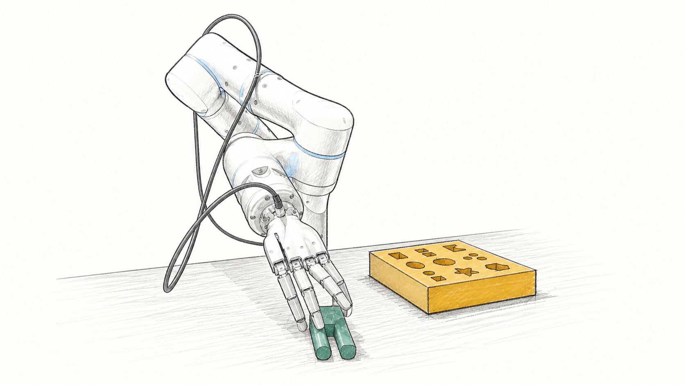
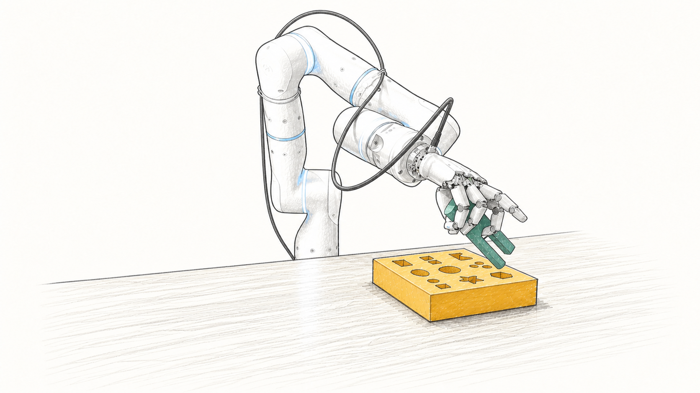
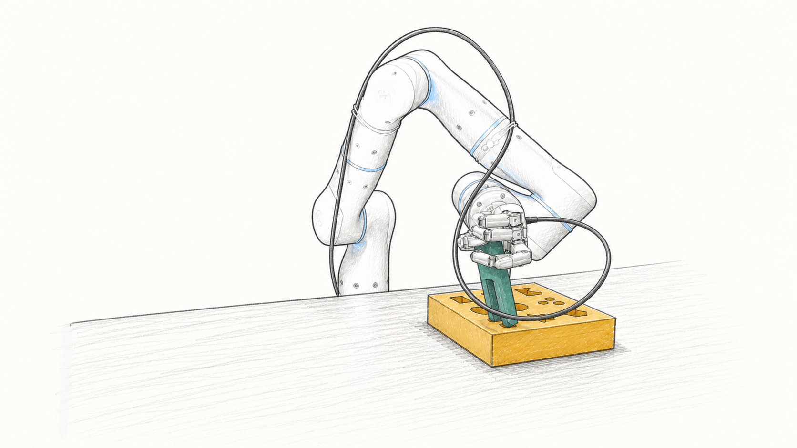

The idea
A faster path to general dexterity
Dexterous robots repeatedly need the same core abilities—reach, grasp, lift, reorient, and transport. Yet conventional RL learns them again from scratch for every downstream task.
ADEPT first learns this shared foundation through a generic object reposing task. It then post-trains task specialists while preserving the pretrained behavior, and distills them into perceptive policies for zero-shot sim-to-real deployment.
The pre-training cost is paid once and amortized: each new task post-trains in roughly 3B environment steps, where training a single task from scratch takes around 9B — and rarely succeeds.
Learn dexterity once. Build every new behavior on top.



The method
The ADEPT recipe
Four stages carry a policy from broad simulated experience to contact-rich manipulation from raw visual and tactile perception.
Throughout, a joint-space geometric fabric sits between the policy and the robot — enforcing joint limits and collision safety while exposing the arm–hand system's full kinematic dexterity, with the same controller running in simulation and on hardware.
One generic object-reposing task over randomized primitives teaches the reusable dexterous prior πpre.
The prior adapts to precise, contact-rich insertion — in three steps designed to never erase it.
The specialist becomes a teacher: a stereo-RGB student learns to act from pixels through a two-stage curriculum.
The student runs zero-shot on real hardware — one continuous policy from raw perception to action.
None of this is scripted or demonstrated. Reposing rewards over the full kinematic dexterity of the hand let strategies emerge on their own — and post-training refines them into task-aligned skill.
Click the tabs to step through the pipeline · hover the dotted terms
Pre-training diet
16 primitives. Every skill.
The entire pre-training curriculum is 16 primitive shapes at randomized scales — nothing else. Click a primitive to watch the pretrained teacher repose it, and toggle true scale to see the range one policy handles, from a 50 mm sphere to a 250 mm rod.
Pseudocode
ADEPT training, end to end
Pre-train reusable dexterity, then adapt it without erasing the prior.
def pre_train(M_pre, fabric, adr):
pi_pre, V_pre = initialize_actor_critic()
ppo = PBT.initialize_optimizer()
for epochs in range(0, max_epochs):
env = M_pre.sample(
objects=primitive_shapes(count=16),
scale="random", goal_pose="random",
)
# randomise physics params with an annealing schedule.
adr.randomise(env)
trajectories = []
# Generate simulation rollouts
for step in rollout_horizon:
o_pre = env.observe()
action = pi_pre.sample(o_pre)
command = fabric.full_cspace_command(action)
transition = env.step(command)
trajectories.append(transition)
pi_pre, V_pre = ppo.update(
trajectories, reward=reposing_reward
)
adr.advance_if_ready(success_rate(trajectories))
ppo = PBT.tune(ppo)
return pi_pre, V_predef post_train(pi_pre, M_post, fabric):
# A. Distill the prior into the expanded observation space.
pi_post = initialize_actor(observations=M_post.observations)
while not actor_distilled:
o_post = M_post.sample_observations(adr_level=20)
a_teacher = pi_pre(project_to_pretrain_obs(o_post))
loss_bc = distillation_loss(pi_post(o_post), a_teacher)
minimize(loss_bc, parameters=pi_post)
# B. Calibrate a fresh critic before updating the actor.
V_post = initialize_critic()
freeze(pi_post)
while not value_calibrated:
trajectories = rollout(pi_post, M_post, fabric)
returns = discounted_returns(trajectories, M_post.reward)
minimize(mse(V_post(trajectories.obs), returns))
# C. Add downstream behavior with conservative PPO.
unfreeze(pi_post)
actor_lr = linear_decay(1e-3, 1e-5)
clip_eps = linear_decay(0.20, 0.05)
critic_lr = 5e-5
while not converged(pi_post):
trajectories = rollout(pi_post, M_post, fabric)
advantages = GAE(trajectories, V_post)
pi_post, V_post = conservative_PPO(
trajectories, advantages, actor_lr, critic_lr, clip_eps
)
M_post.adr.advance_if_ready(success_rate(trajectories))
return pi_post, V_post